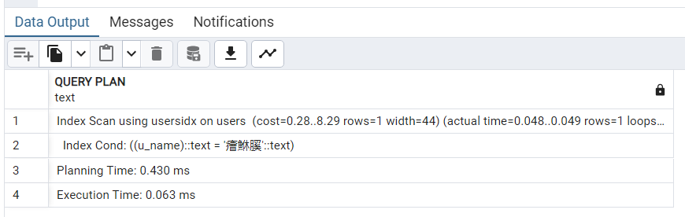
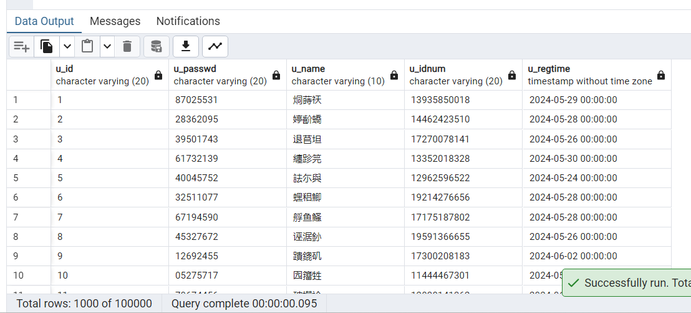
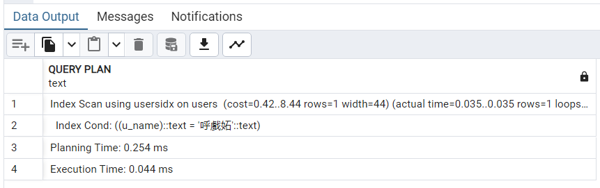

本次实验由于华为云服务器欠费，没有使用openGauss数据库，而使用的是自己电脑的postgresql
一、实验介绍
本实验通过阅读和分析 openGauss 中与 B+树索引构建相关的实现源代码，理解和验证索引的构建流程、使用方法与系统开销。首先回顾索引结构与 B+树索引的原理，总结 CREATE INDEX 语句的用法，通过浏览 openGauss 中 btree 索引构建的相关源代码，实践 btree 索引的具体工程实现。通过一系列实验，对 btree 索引构建、索引与查询执行计划的关联、索引相关系统表、索引的作用与开销有更加深刻的认识和理解。通过添加代码的方法，对 btree索引构建过程中的关键环节信息进行输出，进一步理解索引结构的原理与实现。
本实验的实践内容涉及到 B+树索引在 openGauss 中的具体实现，实验内容较多且综合性较强。如添加的代码引入错误，需要通过“编辑——编译——测试——调试”的迭代步骤进行耐心排错，查找问题所在，增强系统软件的调试能力。
二、实验目的
理解索引结构与 B+树索引的原理。
掌握在 openGauss 中用 CREATE INDEX 语句构建索引的基本方法。
理解在 openGauss 中 btree 索引的构建流程及其在源代码中的实现。
理解索引构建与查询执行计划的关联。
了解在 openGauss 中与索引构建相关的系统表信息。
理解索引的作用与开销。
掌握在 openGauss 中添加代码输出 btree 索引相关信息的方法。
掌握使用 pageinspect 插件分析索引页面的方法。
了解与本实验相关的函数与结构体的源代码。
三、实验步骤和结果
（一）构建btree索引
1.2.3.准备工作
1 | CREATE TABLE users |
4.创建函数 gen_hanzi，用于生成随机汉字。
1 | CREATE OR REPLACE FUNCTION gen_hanzi(INT) RETURNS TEXT AS $$ |
5.设置随机数种子
1 | SELECT setseed(0); |
6.向 users 表中插入 100 行随机生成的元组。
1 | CREATE OR REPLACE FUNCTION gen_hanzi(n INT) RETURNS TEXT AS $$ |
7.查看 users 表中的数据，结果显示如下。

9.执行 SQL，查询指定姓名的 users 表元组。
1 | SELECT * FROM users WHERE u_name = '筟潟蠻'; |

10.查看上述查询语句的查询执行计划以及执行时间。
1 | EXPLAIN ANALYZE SELECT * FROM users WHERE u_name = '筟潟蠻'; |

总时间为0.039+0.025=0.064ms
11.执行 CREATE INDEX 语句，在 users 表上对于 u_name 列构建 btree 索引。
1 | CREATE INDEX usersidx ON users USING btree (u_name); |
12.再次执行上述 EXPLAIN ANALYZE 语句。

发现查询执行计划没有发生任何变化。仍然采用顺序扫描而没有利用 u_name 上刚创建的索引 usersidx 进行查找。请思考这是为什么？
原因：可能是因为表太小了，对于非常小的表，顺序扫描的开销可能比使用索引更低，因此优化器会选择顺序扫描。
（二）索引相关的系统表
1.查看 pg_class 系统表。
1 | SELECT * FROM pg_class WHERE relname = 'usersidx'; |

2.查看表 users 和索引 usersidx 对应的磁盘文件信息。
1 | SELECT pg_relation_filepath(oid), relpages, reltuples FROM pg_class WHERE relname = 'users'; |
可以看到，表 users 存储在数据文件夹的 base/16722/16723 文件中，占用一个磁盘页面，有 100 条元组。
可以用同样方法查看索引 usersidx 的磁盘文件信息。
1 | SELECT pg_relation_filepath(oid), relpages, reltuples FROM pg_class WHERE relname = 'usersidx'; |
可以看到，索引 usersidx 的对应文件是 base/16722/16723，占用 2 个页面，有100 个索引项，与表 users 中的元组数量相同。
3.查看 pg_attribute 系统表。
1 | SELECT a.* FROM pg_class c, pg_attribute a WHERE c.relname='usersidx' and c.oid = a.attrelid; |

4.查看 pg_index 系统表。
1 | SELECT i.* FROM pg_index i, pg_class c WHERE c.relname='usersidx' and c.oid = i.indexrelid; |

5.查看 pg_depend 系统表。
1 | SELECT * FROM pg_depend WHERE objid = 16727; |
6.查看 pg_am 系统表。
这里pg的am表中的属性有所不同
oid: 索引访问方法的对象ID、amname: 访问方法名称、amhandler: 处理函数、amtype: 访问方法类型
1 | SELECT oid, amname, amhandler, amtype FROM pg_am; |
（三）索引的作用与开销
1.2.删除和重新创建users表
3.向users表中插入 1000 行随机生成的元组。
1 | DO $$ |
4.查看 users 表中的数据，结果显示如下。

5.执行 EXPLAIN ANALYZE 语句。
1 | EXPLAIN ANALYZE SELECT * FROM users WHERE u_name = '癐鮴膎'; |
6.执行 CREATE INDEX 语句，在 users 表上对于 u_name 列构建 btree 索引。
1 | CREATE INDEX usersidx ON users (u_name); |
7.再执行 EXPLAIN ANALYZE 语句。
思考：为什么在第一部分中 100 行元组的表上建立的索引在查询中没有发挥作用，而这里在 1000 行元组的表上建立的索引在查询中就被使用呢？
显然前面的猜想是正确的：因为表太小了，顺序扫描的开销可能比使用索引更低，因此优化器会选择顺序扫描。
8.增加表的数据规模
删除并重建users表
向 users 表中插入 100000 行随机生成的元组。
1 | DO $$ |
9.查看 users 表中的数据，结果显示如下。
10.执行 EXPLAIN ANALYZE 语句。
1 | EXPLAIN ANALYZE SELECT * FROM users WHERE u_name = '呼戲妬'; |
11.执行 CREATE INDEX 语句，在 users 表上对于 u_name 列构建 btree 索引。
1 | CREATE INDEX usersidx ON users (u_name); |
12.再执行 EXPLAIN ANALYZE 语句。
与直接顺序扫描的5.287ms相比，建立索引的查询时间为0.298ms，提升了17倍
13.查看索引的空间开销。
pg_relation_size 函数可以查看关系表所占用空间的大小。
1 | SELECT pg_size_pretty(pg_relation_size('usersidx')) AS size; |
再看 users 关系表的空间大小。
1 | SELECT pg_size_pretty(pg_relation_size('users')) AS size; |
14.删除users表，为后面实验步骤做准备。
1 | DROP TABLE users; |
（四）添加代码：分析 btree 索引构建过程
华为云欠费，此部分暂未完成